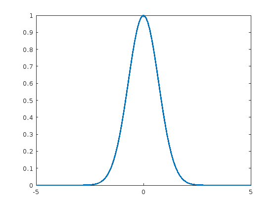
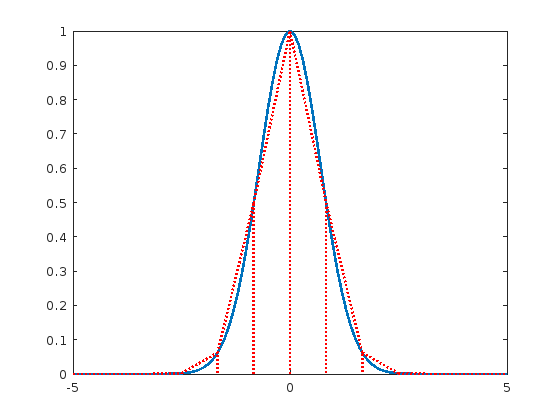

Piecewise Areas
In today's lecture, we will mostly concern ourselves with calculating or estimating areas. The most likely application in your work will be to calculate probabilities, but the methods we will use are powerful and flexible.
clear
Let's start by using one of those anonymous functions
fcn = @(x) exp(-x.^2);
xax = linspace(-5, 5, 101);
plot(xax, fcn(xax), 'linewidth', 2)

Maybe for a crude approximation, a triangle?
line( ... [ 0.00 1.75 -1.75 0.00 0.00], ... % x values [ 1.00 0.00 0.00 1.00 0.00], ... % y values 'color', 'r', ... % red 'linewidth', 2) % thicc

This triangle has area:
A = 2 * (1.75 * 1 * 0.5)
A =
1.7500
... but this is clearly a very coarse approximation. Let's see if we can do a little better. How about trapezoids?
First put the curve back
xax = linspace(-5, 5, 101);
plot(xax, fcn(xax), 'linewidth', 2)
 We'll define some small bins on the horizontal axis
B = 12; % number of bins bins = linspace(-5, 5, B+1); % edges of B bins area = zeros(B, 1); % areas of B bins for b = 1:B x1 = bins(b); % left edge of this bin x2 = bins(b+1); % right edge of this bin y1 = fcn(x1); % function height on left edge y2 = fcn(x2); % function height on right edge h = (y1 + y2) / 2; % height of this bin line( ... % draw the trapezoid [x1 x2 x2], ... % x values [y1 y2 0], ... % y values 'color', 'r', ... % red 'lines', ':', ... % dashes 'linew', 2) area(b) = h * (x2 - x1); % area of this bin end sum(area) % add the areas together
ans =
1.7725
